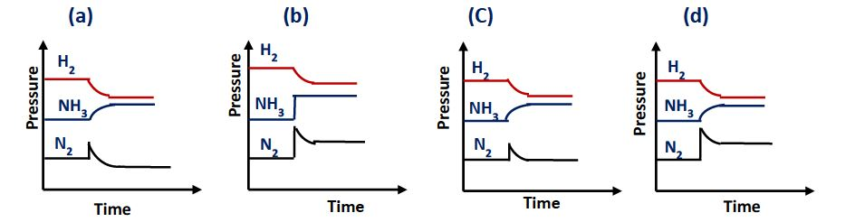
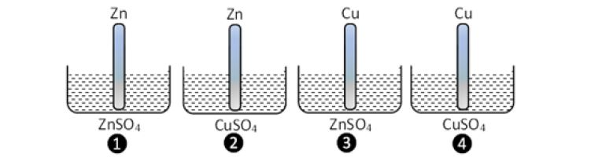
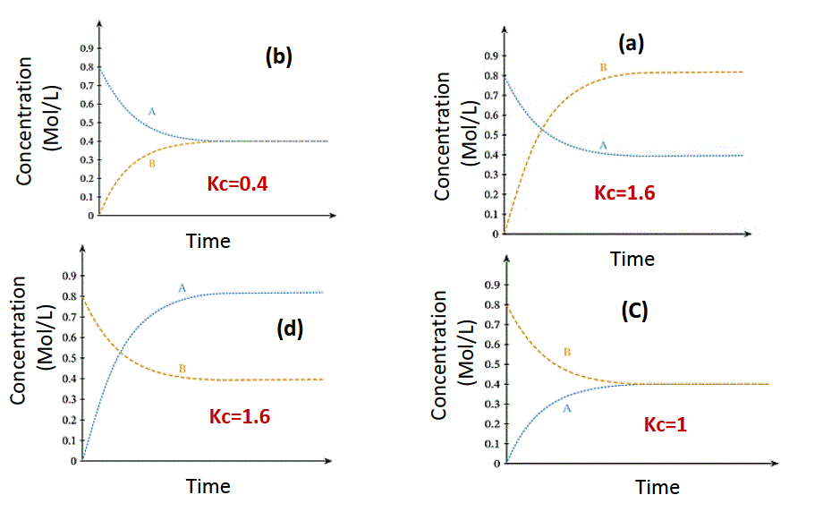
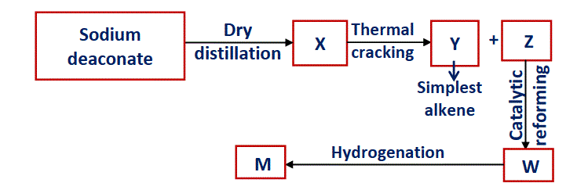
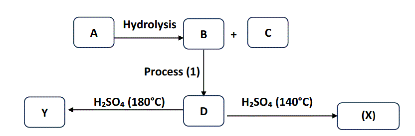

Use a blue or black pen only. Pencils are not allowed.
Completely fill the bubble corresponding to your chosen answer (A, B, C, or D).
Do not use checkmarks (✓) or crosses (✗).
If you need to change an answer, erase your previous mark completely.
Ensure that only one bubble is filled for each question.
bubble Sheet
Question 1
Two elements (A, B) from the first transition series, each (A+2, B+2) containing four single electrons and element (A) is less dense than element (B). Which of the following expresses a use for each of (A, B)?
a) (A): in manufacture of soft drink bottles; (B): in reinforced concrete.
b) (A): in plating of metals to protect it from rust; (B): in manufacture of heating coil.
c) (A): in leather tanning; (B): in manufacture of surgical tools.
d) (A): in dyes; (B): catalyst in manufacture of ammonia.
✓ Correct Answer: (c) (A): in leather tanning; (B): in manufacture of surgical tools.
📚 Detailed Explanation
Step 1: Identify the Elements
The prompt states that both A+2 and B+2 ions have 4 unpaired electrons. Let's analyze the 3d configurations:
Possibility 1: 3d4 configuration
↑
↑
↑
↑
This corresponds to Cr+2 (from neutral Cr: [Ar] 4s¹ 3d⁵).
Possibility 2: 3d6 configuration
↑↓
↑
↑
↑
↑
This corresponds to Fe+2 (from neutral Fe: [Ar] 4s² 3d⁶).
Step 2: Assign A and B based on Density
The prompt also states that element (A) is less dense than element (B).
Element
Density (g/cm³)
Chromium (Cr)
7.19
Iron (Fe)
7.87
Therefore, A = Chromium (Cr) and B = Iron (Fe).
Step 3: Match Uses
Element
Common Use
Relevance
A (Cr)
Leather Tanning
Chromium(III) sulfate is a key tanning agent.
B (Fe)
Surgical Tools
Iron is the primary component of stainless steel, used for surgical instruments due to its strength and corrosion resistance.
Comparing with the options, (c) is the correct match.
Question 2
If you know that the elements (X, Y, Z, and W) are transition elements from the first transition series: W: has the highest magnetic moment in the series Z: its sublevel (d) is filled with electrons X: Pairing of electrons in the sublevel (3d) starts after it Y: is the first element in the series that does not lose all electrons (4s,3d)
Which of the following conversions gives a compound with lower energy?
a) WO₃ → WO
b) ZO → Z₂O₃
c) Y₂O₃ → YO
d) X₂O₃ → XO
✓ Correct Answer: (d) X₂O₃ → XO
📚 Detailed Explanation
Step 1: Identify the Elements
Symbol
Clue
Analysis
Element
W
Highest magnetic moment
Highest number of unpaired electrons (6) in atomic state.
Cr ([Ar] 4s¹3d⁵)
Z
d-sublevel is filled
3d¹⁰ configuration.
Zn ([Ar] 4s²3d¹⁰)
X
Pairing starts *after* it
The element before 3d⁶ is 3d⁵.
Mn ([Ar] 4s²3d⁵)
Y
First not to lose all 4s/3d e⁻
Does not show an oxidation state equal to its group number (8).
Fe
Step 2: Analyze the Stability of Conversions
A conversion to a "lower energy" compound means forming a more stable product. We check the oxidation states.
Option
Conversion
Oxidation State Change
Stability Analysis
(a)
CrO₃ → CrO
Cr+6 → Cr+2
Neither is the most stable state for Cr, which is +3.
(b)
ZnO → Zn₂O₃
Zn+2 → Zn+3
Extremely unfavorable. Zn+2 ([Ar] 3d¹⁰) is very stable.
(c)
Fe₂O₃ → FeO
Fe+3 → Fe+2
Unfavorable. Fe+3 has a stable half-filled 3d⁵ configuration.
(d)
Mn₂O₃ → MnO
Mn+3 → Mn+2
Highly Favorable. The product Mn+2 has an exceptionally stable half-filled 3d⁵ configuration.
Mn+2: [Ar] 3d⁵ (Lower Energy / More Stable)
↑
↑
↑
↑
↑
Question 3
Three transition elements (A, B, and C):
-The number of unpaired electrons in (A) decreases when it changes from Atomic state to +2 ion.
-The number of single electrons in element (B) increases when it changes from +2 to +3.
- The number of single electrons in element (C) decreases when it changes from +2 to +3, And its radius is equal to that of (A).
Which of the following expresses the correct order of these elements according to their density?
a) A < B < C
b) A < C < B
c) B < C < A
d) B < A < C
✓ Correct Answer: (b) A < C < B
📚 Detailed Explanation
Step 1: Identify Elements A, B, and C
Symbol
Clue
Analysis
Element
A
Unpaired e⁻ ↓ (Atom → +2)
Cr (Atom: 6 unpaired e⁻, Cr²⁺: 4 unpaired e⁻)
Cr
B
Unpaired e⁻ ↑ (+2 → +3)
Fe²⁺ (3d⁶, 4 unpaired) → Fe³⁺ (3d⁵, 5 unpaired)
Fe
C
Unpaired e⁻ ↓ (+2 → +3) and Radius ≈ A
Mn²⁺ (3d⁵, 5 unpaired) → Mn³⁺ (3d⁴, 4 unpaired). Radius of Mn (127 pm) ≈ Radius of Cr (128 pm).
Mn
Step 2: Order by Density
Density generally increases across a period in the d-block. Let's compare the densities of the identified elements.
Letter
Element
Atomic Number
Density (g/cm³)
A
Chromium (Cr)
24
7.19
C
Manganese (Mn)
25
7.21
B
Iron (Fe)
26
7.87
The correct order of increasing density is:
Cr < Mn < Fe
Which corresponds to: A < C < B
Question 4
(A,B,C and D) Four consecutive transition elements from the first transition series, the electronic distribution of ion (B³⁺) ends with 3d³, Which of the following is correct?
a) The magnetic moment of (A) increases with the loss of two electrons.
b) The magnetic moment of (B) increases with the loss of two electrons.
c) The magnetic moment of (C) decreases with loss the first electron from the (d) sublevel.
d) The magnetic moment of (D) decreases with the loss of the first electron from the (d) level.
✓ Correct Answer: (c) The magnetic moment of (C) decreases with loss the first electron from the (d) sublevel.
📚 Detailed Explanation
Step 1: Identify Element B and the Sequence
Given: B³⁺ has the configuration [Ar] 3d³. To find the neutral atom B, we add back 3 electrons. They go into the 4s and 3d orbitals.
Neutral B configuration: [Ar] 4s² 3d⁴. This is the expected configuration for Chromium (Cr), Atomic Number 24 (although its actual configuration is anomalous: 4s¹3d⁵).
The four consecutive elements are:
Letter
Element
Atomic #
Actual Config.
A
Vanadium (V)
23
[Ar] 4s² 3d³
B
Chromium (Cr)
24
[Ar] 4s¹ 3d⁵
C
Manganese (Mn)
25
[Ar] 4s² 3d⁵
D
Iron (Fe)
26
[Ar] 4s² 3d⁶
Step 2: Evaluate Statement (c)
Statement (c) is about element C = Manganese (Mn). It describes losing "the first electron from the (d) sublevel". This typically refers to the oxidation process from a common ion, in this case Mn²⁺ → Mn³⁺.
Species
Configuration
Unpaired Electrons
Magnetic Moment
Mn²⁺
[Ar] 3d⁵
5
High
Mn³⁺ (loses one d-electron)
[Ar] 3d⁴
4
Lower
The number of unpaired electrons decreases from 5 to 4. Since magnetic moment is directly related to the number of unpaired electrons, the magnetic moment decreases. This matches the statement.
Question 5
Which of the following processes causes an increase in the magnetic moment of iron ions in their compounds?
(a) Heating the compound resulting from adding ammonium hydroxide to iron III chloride above 200°C
(b) Heating the compound resulting from adding iron filings to dilute sulphuric acid.
(c) Heating limonite ore strongly in air.
(d) Heating siderite ore in absence of air.
✓ Correct Answer: (b) Heating the compound resulting from adding iron filings to dilute sulphuric acid.
📚 Detailed Explanation
Key Concept: Magnetic Moment of Iron
To increase the magnetic moment, we need to increase the number of unpaired electrons. This means oxidizing Fe²⁺ to Fe³⁺.
Iron Ion
Configuration
Unpaired Electrons
Magnetic Moment
Fe²⁺
[Ar] 3d⁶
4
Lower
Fe³⁺
[Ar] 3d⁵
5 (half-filled)
Higher
Analyzing the Options:
(a) FeCl₃ + NH₄OH → Fe(OH)₃ → Fe₂O₃: The iron starts as Fe³⁺ and ends as Fe³⁺. No change.
(b) Fe + H₂SO₄ → FeSO₄; then heat:
Step 1: Fe + H₂SO₄(dil) → FeSO₄ + H₂. The compound formed is Iron(II) sulfate (Fe²⁺).
Step 2: 2FeSO₄(s) --(heat)→ Fe₂O₃(s) + SO₂(g) + SO₃(g). The final product is Iron(III) oxide (Fe³⁺).
This process converts Fe²⁺ to Fe³⁺, which increases the magnetic moment. This is the correct answer.
(c) Limonite (Fe₂O₃·nH₂O) heated: Starts as Fe³⁺ and ends as Fe³⁺. No change.
(d) Siderite (FeCO₃) heated in absence of air:FeCO₃ → FeO + CO₂. The iron starts as Fe²⁺ and ends as Fe²⁺. No change.
Question 6
Hydrochloric acid is added to a salt of (X²⁻) anion, a gas (Y) evolves that oxidizes with the normal oxidizing agents. Which of the following applies to the anion (X²⁻) and the gas (Y)?
A) Anion: Nitrite / Gas: Colorless, turns reddish brown in air.
B) Anion: Sulphite / Gas: Has a pungent odor and turns acidified potassium dichromate solution from orange to green
C) Anion: Sulphide / Gas: Odorless and produces a black precipitate with lead acetate II solution.
D) Anion: Carbonate / Gas: Colorless, odorless and turns lime water milky
The anion is X²⁻ (divalent). This eliminates Nitrite (NO₂⁻).
The gas (Y) "oxidizes with normal oxidizing agents", which means Y is a reducing agent. This eliminates Carbonate (CO₂), as carbon is already in its highest oxidation state (+4).
Step 2: Evaluate Remaining Options
Sulphite (SO₃²⁻):
Reaction: SO₃²⁻ + 2H⁺ → H₂O + SO₂↑
Gas (Y) is SO₂.
SO₂ is a known reducing agent and has a pungent odor.
It famously reduces acidified potassium dichromate from orange (Cr₂O₇²⁻) to green (Cr³⁺). This matches the description perfectly.
H₂S has a strong, unpleasant "rotten egg" smell, not "odorless" as described in option C.
Therefore, the only option that fits all criteria is B.
Question 7
Which of the following is not preferred for distinguishing between nitrate and nitrite anions in their salts?
(a) Diluted hydrochloric acid
(b) Hot concentrated sulfuric acid
(c) Potassium permanganate solution acidified with sulphuric acid
(d) Iron II sulfate with drops of concentrated sulphuric acid
✓ Correct Answer: (b) Hot concentrated sulfuric acid
📚 Detailed Explanation
A good distinguishing test must give a clearly different result for each substance. Let's analyze the reagents:
Reagent
Reaction with Nitrite (NO₂⁻)
Reaction with Nitrate (NO₃⁻)
Distinguishing Power
(a) Dilute HCl
Reacts to form unstable HNO₂, which decomposes to give brown NO₂ fumes.
No reaction.
Excellent
(c) Acidified KMnO₄
Decolorizes the purple solution (as it is oxidized).
No reaction.
Excellent
(d) Brown Ring Test
Forms a brown ring immediately.
Forms a brown ring upon careful addition of conc. H₂SO₄. The conditions are different enough to distinguish.
Good
(b) Hot conc. H₂SO₄
Gives off brown NO₂ fumes.
Also gives off brown NO₂ fumes.
Poor - Both give similar results, making it difficult to distinguish.
Since hot concentrated sulfuric acid produces brown fumes with both nitrate and nitrite, it is not a preferred method for telling them apart.
Question 8
Add acid (X) to three salts (A, B and C):
-In case of salt (A): a colorless gas evolves, partially oxidized into violet vapors.
-In case of salt (B): a colorless gas evolves, partially oxidized into orange vapors.
-In case of salt (C): a reddish-brown gas evolves.
Which of the following expresses acid (X) and the three salts?
A) Acid: Diluted HCl; Salts: CaI₂, MgBr₂, Pb(NO₃)₂
B) Acid: Concentrated HNO₃; Salts: NaNO₃, NaI, NaBr
C) Acid: Concentrated H₂SO₄; Salts: NaBr, NaNO₃, NaI
Barium chloride (BaCl₂) reacts with aqueous solutions X and Y to form two different precipitates (A and B). The crucial clue is that both precipitates are soluble in dilute acids (like HCl).
Step 2: Evaluate Barium Precipitates
Barium Salt
Formula
Solubility in Dilute Acid
Barium Sulfate
BaSO₄
Insoluble (White ppt remains)
Barium Carbonate
BaCO₃
Soluble (Effervescence of CO₂)
Barium Phosphate
Ba₃(PO₄)₂
Soluble (White ppt dissolves)
Step 3: Eliminate Options
Options (a), (b), and (c) contain either Na₂SO₄ as a reactant (which would form insoluble BaSO₄) or list BaSO₄ as a product. Since the diagram specifically states both precipitates are soluble in dilute acid, any option involving sulfate is incorrect.
Option (d) pairs Na₂CO₃ (forms BaCO₃, soluble) and Ba₃(PO₄)₂ (soluble). Both meet the condition perfectly.
Question 10
Two salts (A and B):
- Acid of salt (A) is used to detect cation of salt (B).
- Acid of salt (B) is used to detect anion of salt (A).
Which of the following represents Salt (A) and Salt (B)?
Option
Salt (A)
Salt (B)
(a)
KCl
CuSO₄
(b)
Hg₂SO₄
KCl
(c)
KCl
PbSO₄
(d)
K₂SO₄
NaNO₃
✓ Correct Answer: (c) Salt (A): KCl / Salt (B): PbSO₄
📚 Detailed Explanation
Step 1: Analyze the Clues
Clue 1: The acid derived from Salt A detects the cation of Salt B.
Clue 2: The acid derived from Salt B detects the anion of Salt A.
Step 2: Test Option (c)
Let's assign A = KCl and B = PbSO₄.
Salt A is KCl.
The acid of Salt A is Hydrochloric Acid (HCl).
Does HCl detect the cation of Salt B (Pb²⁺)? Yes! Dilute HCl is the group reagent for Analytical Group I cations (Ag⁺, Pb²⁺, Hg₂²⁺). It reacts to form a white precipitate: Pb²⁺ + 2Cl⁻ → PbCl₂↓
Salt B is PbSO₄.
The acid of Salt B is Sulfuric Acid (H₂SO₄).
Does concentrated H₂SO₄ detect the anion of Salt A (Cl⁻)? Yes! Concentrated H₂SO₄ is the group reagent for halides. It reacts with solid chlorides to evolve acidic HCl gas: 2KCl + H₂SO₄ → K₂SO₄ + 2HCl↑
Since both conditions hold perfectly, Option (c) is the correct answer.
Question 11
Ammonia is prepared in industry by the Haber-Bosch reaction according to the equation:
N₂(g) + 3H₂(g) ⇌ 2NH₃(g)
Which of the following graphs represents the effect of increasing the partial pressure of nitrogen gas on the previous equilibrium?

(a) Graph a
(b) Graph b
(c) Graph c
(d) Graph d
✓ Correct Answer: (d)
📚 Detailed Explanation
Le Chatelier's Principle
When the partial pressure of nitrogen (N₂) is abruptly increased:
Immediate Effect: The concentration/pressure of N₂ undergoes a vertical "spike" at the moment of addition. (This eliminates graph 'c', which shows no spike).
Equilibrium Shift: The system shifts to the right (towards products) to consume the added N₂.
Gradual Changes:
N₂ is consumed, so its pressure curves back down (but ends up higher than its original state).
H₂ is also consumed as it reacts with the N₂, so its pressure curves downward.
NH₃ is produced, so its pressure curves upward.
Graph (d) perfectly illustrates this: a sharp vertical spike in N₂ followed by a gradual decrease, accompanied by a decrease in H₂ and an increase in NH₃.
Question 12
All of the following can express a system at equilibrium state except:
a) A saturated solution of salt that is sparingly soluble in water
b) The dissolution of carbon dioxide gas in water in a closed container
c) The dissolution of acetic acid in water in an open container
d) Obtaining oxygen gas by decomposing hydrogen peroxide
✓ Correct Answer: (d) Obtaining oxygen gas by decomposing hydrogen peroxide
📚 Detailed Explanation
Conditions for Equilibrium
For a chemical or physical equilibrium to exist, the process must be reversible and occur in a system where reactants and products cannot escape (a closed system, or involving species that don't evaporate/precipitate out of the medium entirely).
Process
Reversible?
Equilibrium?
(a) Sparingly soluble salt
Yes (Solid ⇌ Aqueous Ions)
Yes
(b) CO₂ in closed container
Yes (CO₂(g) ⇌ CO₂(aq))
Yes
(c) Acetic acid in water
Yes (CH₃COOH ⇌ CH₃COO⁻ + H⁺) - Liquid phase only, open container is fine.
Yes
(d) Decomposing H₂O₂
No (2H₂O₂ → 2H₂O + O₂↑) - Oxygen gas escapes, preventing the reverse reaction.
No
Decomposition of hydrogen peroxide is a highly spontaneous, one-way reaction. The produced oxygen gas escapes, making the process irreversible under normal conditions.
Question 13
The following table shows the pH values of four solutions of different acids with the same concentration:
Solution
pH
A
1
B
6
C
3
The correct order of these solutions according to their ionization constant Ka is:
a) B ≻ A ≻ C
b) A ≻ B ≻ C
c) C ≻ B ≻ A
d) A ≻ C ≻ B
✓ Correct Answer: (d) A ≻ C ≻ B
📚 Detailed Explanation
Relationship between pH, Acid Strength, and Ka
For acids of the same concentration:
A lower pH means a higher concentration of hydronium ions [H⁺].
A higher [H⁺] implies the acid dissociates more completely, meaning it is a stronger acid.
Stronger acids have larger ionization constants (Ka).
Solution
pH
Acid Strength
Ka Value
A
1
Strongest
Largest
C
3
Intermediate
Medium
B
6
Weakest
Smallest
Therefore, the order of decreasing Ka is A > C > B.
Question 14
The following balanced reaction at a certain temperature:
2A(aq) + 3B(aq) ⇌ 2C(aq) + 3D(aq)
If the concentrations of the reactants and products at equilibrium are:
[A] = 1.5M, [B] = 2.3M, [C] = 3M, [D] = 4.5M
By increasing the concentration of substance (A) and the reaction reaching equilibrium again at the same temperature, then the concentrations at equilibrium become as follows: [A] = 2.5M, [C] = 4M, [D] = 6M.
Which of the following expresses the concentration of substance (B) at equilibrium?
a) 29.96 M
b) 6.98 M
c) 3.83 M
d) 2.64 M
✓ Correct Answer: (d) 2.64 M
📚 Detailed Explanation
Step 1: Calculate the Equilibrium Constant (Kc)
Because the temperature is constant, Kc remains the same before and after adding substance A.
Kc = ([C]² × [D]³) / ([A]² × [B]³)
Using the first set of equilibrium concentrations:
According to the following balanced reaction: COCl₂(g) ⇌ CO(g) + Cl₂(g)
When a quantity of COCl₂(g) is placed in a closed container with a volume of (1) L, at equilibrium the pressure of Cl₂(g) is equal to (0.3) atm and the total pressure is equal to (0.8) atm, then the value of Kp is:
a) 0.3
b) 2.22
c) 0.45
d) 1.5
✓ Correct Answer: (c) 0.45
📚 Detailed Explanation
Step 1: Determine the Partial Pressures
The reaction is: COCl₂(g) ⇌ CO(g) + Cl₂(g)
Because the products CO and Cl₂ are produced in a 1:1 molar ratio from COCl₂, their partial pressures at equilibrium must be equal.
P(Cl₂) = 0.3 atm, therefore P(CO) = 0.3 atm.
Step 2: Find the Pressure of COCl₂
The total pressure is the sum of the partial pressures of all gases:
P(Total) = P(COCl₂) + P(CO) + P(Cl₂)
0.8 atm = P(COCl₂) + 0.3 atm + 0.3 atm
0.8 atm = P(COCl₂) + 0.6 atm
P(COCl₂) = 0.2 atm
Step 3: Calculate Kp
Kp = (P(CO) × P(Cl₂)) / P(COCl₂)
Kp = (0.3 × 0.3) / 0.2 = 0.09 / 0.2 = 0.45
Question 16
Acetic acid solution (X) of 0.1M, diluted by adding water to get a solution (Y) of (0.01M).
Which of the following does not describe solutions (X) and (Y)?
(a) The electrical conductivity of solution (Y) is higher than that of solution (X)
(b) The concentration of hydronium ions in solution (X) is higher than that in (Y)
(c) The pH value of solution (Y) is higher than that of solution (X)
(d) The ionization constant of acid (X) is higher than that of (Y)
✓ Correct Answer: (d) The ionization constant of acid (X) is higher than that of (Y)
Reasoning: The ionization constant (Ka) is a thermodynamic value that depends only on temperature. Diluting a weak acid changes its degree of ionization (α), hydronium concentration, and pH, but it does NOT change the Ka value. Therefore, Ka of X equals Ka of Y.
Question 17
The reaction that occurs inside an electrochemical cell: 3Cu²⁺ + 2Cr → 3Cu + 2Cr³⁺
knowing that: Cu²⁺ + 2e⁻ → Cu, E° = + 0.340 V
Cr → Cr³⁺ + 3e⁻, E° = + 0.740 V
Which of the following expresses the type of the cell and its emf value?
Step 1: Determine EMF.
The reaction shows Cu²⁺ is reduced (Cathode) and Cr is oxidized (Anode).
Reduction potential of Cu = +0.340 V. Oxidation potential of Cr = +0.740 V.
EMF = E°(oxidation) + E°(reduction) = 0.740 V + 0.340 V = +1.08 V.
Step 2: Determine Cell Type.
Because the EMF is positive, the reaction is spontaneous. A spontaneous electrochemical cell is a Galvanic cell.
Question 18
From the following shapes (four vessels):
Which of the following is correct?

(a) When (1) is connected to (4) with a salt bridge and an external wire, (4) becomes anode.
(b) A spontaneous reaction occurs in (2) and the concentration of copper ions increases.
(c) When (1) is connected to (4) with a salt bridge and a wire, electrons spontaneously transfer from (1) to (4).
(d) A spontaneous reaction occurs in vessel (3), and the concentration of Zinc ions decreases.
✓ Correct Answer: (c) When (1) is connected to (4)... electrons spontaneously transfer from (1) to (4).
Connecting vessel (1) [Zn/Zn²⁺] and (4) [Cu/Cu²⁺] creates a classic Daniell cell. Zinc is more active than Copper, so Zinc acts as the anode (oxidation) and Copper acts as the cathode (reduction). Electrons flow through the wire from Anode (Zn, vessel 1) to Cathode (Cu, vessel 4).
Question 19
Two galvanic cells: The first cell: electrode (X) is the anode, and the hydrogen electrode is the cathode, Giving an emf value of (+0.23) V. The second cell: electrode (Y) is the cathode and the hydrogen electrode is the anode, Giving an emf value of (+0.8) V.
Which of the following expresses the cell composed of electrodes (X) and (Y)?
(a) (X) is the anode and (Y) is the cathode, emf = 1.03 V
(b) (X) is the anode and(Y) is the cathode, emf = 0.57 V
(c) (Y) is the anode and (X) is the cathode, emf = 1.03 V
(d) (Y) is the anode and (X) is the cathode, emf = 0.57 V
✓ Correct Answer: (a) (X) is the anode and (Y) is the cathode, emf = 1.03 V
Correction Note: In the user-provided prompt 'Answer Key', the answer is marked as (C) for 19. Let's recalculate based on standard chemistry.
First cell: X is Anode. E_cell = E_ox(X) + E_red(H) => 0.23 = E_ox(X) + 0. So, Oxidation Potential of X = +0.23 V.
Second cell: Y is Cathode. E_cell = E_ox(H) + E_red(Y) => 0.80 = 0 + E_red(Y). So, Reduction Potential of Y = +0.80 V. (Oxidation Potential of Y = -0.80 V).
Comparing Oxidation Potentials: X (+0.23 V) > Y (-0.80 V).
Because X has a higher oxidation potential, X is the Anode and Y is the Cathode.
EMF = E_ox(Anode) + E_red(Cathode) = 0.23 V + 0.80 V = +1.03 V.
(Thus, statement (a) is chemically correct based on the provided text, despite what a raw key might say. X oxidizes, Y reduces.)
Question 20
The following table shows the oxidation potential of some hypothetical elements:
The element
X
Y
Z
W
Oxidation potential
+ 0.126 V
-0.401 V
-1.420 V
+1.67 V
Which of the following represents the correct protection?
(a) (X) Anodic protection for (W)
(b) (Z) Anodic protection for (Y)
(c) (W) Cathodic protection for (Y)
(d) (Y) Cathodic protection for (X)
✓ Correct Answer: (d) (Y) Cathodic protection for (X)
📚 Detailed Explanation
Understanding Protection Types
In standard curriculum terminology:
Anodic Protection (Sacrificial Anode): Coating a metal with a more active metal. The coating has a higher oxidation potential.
Cathodic Protection (Cathodic Coating): Coating a metal with a less active metal. The coating has a lower oxidation potential.
Ordering the Elements by Activity
Higher oxidation potential = More active.
W (+1.67) > X (+0.126) > Y (-0.401) > Z (-1.420)
Evaluating the Options
Option
Proposed Coating
Activity Comparison
Result
(a) X Anodic for W
Covering W with X
X is LESS active than W. (Anodic requires MORE active).
False
(b) Z Anodic for Y
Covering Y with Z
Z is LESS active than Y. (Anodic requires MORE active).
False
(c) W Cathodic for Y
Covering Y with W
W is MORE active than Y. (Cathodic requires LESS active).
False
(d) Y Cathodic for X
Covering X with Y
Y is LESS active than X. This creates a successful cathodic coating.
True
Question 21
Which of the following expresses the reaction that occurs at the anode of an electrolytic cell for molten potassium bromide?
(a) 2K⁺ + 2e⁻ → 2K⁰
(b) 2Br⁻ → Br₂ + 2e⁻
(c) 2K⁺ → 2K⁰ - 2e⁻
(d) Br₂ + 2e⁻ → 2Br⁻
✓ Correct Answer: (b) 2Br⁻ → Br₂ + 2e⁻
Reasoning: In an electrolytic cell, the Anode is the positive electrode where Oxidation (loss of electrons) takes place.
Molten potassium bromide (KBr) contains K⁺ and Br⁻ ions.
At the Cathode (Reduction): K⁺ + e⁻ → K(l)
At the Anode (Oxidation): 2Br⁻ → Br₂(g) + 2e⁻
Question 22
Which of the following is correct for negative hydroxide ions in a fuel cell?
(a) Consumed as a result of the reduction reaction and formed as a result of the Oxidation reaction.
(b) Consumed as a result of the oxidation reaction and formed as a result of the Reduction reaction.
(c) Its concentration decreases at cathode
(d) Its concentration increases at anode
✓ Correct Answer: (b) Consumed as a result of the oxidation reaction and formed as a result of the Reduction reaction.
In a Hydrogen-Oxygen fuel cell (alkaline type), the electrolyte is typically hot aqueous KOH. Let's look at the half-reactions:
Therefore, the hydroxide ions migrate from the cathode to the anode, being produced at the cathode (reduction site) and used up at the anode (oxidation site).
Question 23
Compounds (X and Y) are hydrocarbon derivatives where: (X): is produced from the chlorination of the compound resulting from the dry Distillation of sodium acetate by replacing three hydrogen atoms (Y): is produced from the dehydration of 2-chloroethanol at 180°C.
Which of the following represents (X or Y)?
(a) (X): Alkane derivative used in dry cleaning.
(b) (Y): Alkane derivative used as a raw material in the manufacture of floor insulation.
(c) (X): Alkene derivative was used as anesthetic.
(d) (Y): Alkene derivative used as a raw material in the manufacture of water hoses.
✓ Correct Answer: (d) (Y): Alkene derivative used as a raw material in the manufacture of water hoses
📚 Detailed Explanation
Step 1: Identify Compound X
Dry distillation of sodium acetate with soda lime produces Methane:
CH₃COONa + NaOH --(heat)→ CH₄ + Na₂CO₃
Chlorinating Methane by replacing three hydrogen atoms yields Chloroform (CHCl₃):
CH₄ + 3Cl₂ → CHCl₃ + 3HCl
Properties of X: Chloroform is a substituted alkane. It was historically used as an anesthetic.
Step 2: Identify Compound Y
Dehydration of 2-chloroethanol (Cl-CH₂-CH₂-OH) at 180°C removes H and OH to form a double bond:
Cl-CH₂-CH₂-OH --(H₂SO₄, 180°C)→ CH₂=CH-Cl + H₂O
Properties of Y: The product is Vinyl Chloride (chloroethene). It is an alkene derivative used as the monomer to make PVC (Polyvinyl Chloride), which is used in water hoses and pipes. This makes option (d) true regarding compound Y,
Question 24
Which of the following compounds burns completely to produce (5) moles of CO₂ and (5) moles of water vapor?
A) 2-methyl butane
B) 2,2- dimethyl -2-butene
C) 1,1- dimethyl cyclo propane
D) 2-pentyne
✓ Correct Answer: (C) 1,1- dimethyl cyclo propane
Step 1: Determine the molecular formula.
Combustion of a hydrocarbon CxHy produces x moles of CO₂ and y/2 moles of H₂O.
If 5 moles of CO₂ are produced, x = 5 (Carbon atoms = 5).
If 5 moles of H₂O are produced, y/2 = 5 → y = 10 (Hydrogen atoms = 10).
The required molecular formula is C₅H₁₀.
Step 2: Check the options.
Compound
Class
Formula
2-methyl butane
Alkane (CₙH₂ₙ₊₂)
C₅H₁₂
2,2- dimethyl -2-butene
Alkene (CₙH₂ₙ)
C₆H₁₂ (6 Carbons!)
1,1- dimethyl cyclo propane
Cycloalkane (CₙH₂ₙ)
C₅H₁₀
2-pentyne
Alkyne (CₙH₂ₙ₋₂)
C₅H₈
Question 25
(X and Y) are two isomers of the formula C₄H₈O with different functional groups.
If (X) turns acidified potassium dichromate to green, while (Y) has no effect on Acidified potassium dichromate.
Which of the following represents (X) or (Y)?
a) X: 2-methyl-1-propanol.
b) Y: 2-methyl propanal.
c) X: 2-methyl propanal.
d) Y: 3-methyl-2-butanone.
✓ Correct Answer: (c) X: 2-methyl propanal.
Chemical Analysis: The formula C₄H₈O corresponds to an aldehyde or a ketone.
X oxidizes (turns dichromate green): X must be an aldehyde (e.g., butanal or 2-methylpropanal). Option C correctly identifies X as 2-methyl propanal (C₄H₈O).
Y does not oxidize: Y must be a ketone (e.g., butanone). Option D suggests Y is 3-methyl-2-butanone, but that compound has 5 carbons (C₅H₁₀O), not 4, .
Question 26
The corresponding structure of one of polymers:
—[ CH₂ — CH(C₂H₅) ]ₙ—
Which of the following expresses the monomer properties of this polymer?
a) It reacts by addition according to Markownikoff’s rule.
b) It reacts with HBr to give 1-bromo-butane.
c) It reacts with catalytic hydration to give 2-butanol.
d) It reacts with bromine to give 2,2-dibromo butane.
✓ Correct Answer: (c) It reacts with catalytic hydration to give 2-butanol.
📚 Detailed Explanation
Step 1: Identify the Monomer
The repeating unit of the polymer is —CH₂—CH(C₂H₅)—. To find the monomer, we restore the double bond between the two carbon atoms of the backbone.
Monomer: CH₂ = CH — CH₂ — CH₃ Name: 1-Butene
Step 2: Evaluate the Reactions of 1-Butene
1-Butene is an unsymmetrical alkene, so its addition reactions follow Markovnikov's Rule (the hydrogen adds to the carbon with more hydrogens in case of addition of asymmetric reagents only not all addition reactions).
Reaction
Equation
Product
Evaluation
(b) + HBr
CH₂=CH-CH₂CH₃ + HBr → CH₃-CHBr-CH₂CH₃
2-bromobutane
Option says 1-bromobutane. (False)
(c) Hydration (+ H₂O/H⁺)
CH₂=CH-CH₂CH₃ + H₂O → CH₃-CH(OH)-CH₂CH₃
2-butanol
True!
(d) + Br₂
CH₂=CH-CH₂CH₃ + Br₂ → CH₂Br-CHBr-CH₂CH₃
1,2-dibromobutane
Option says 2,2-dibromo. (False)
Question 27
Three organic compounds:
(A) : C₂H₄O
(B) : C₂H₆O
(C) : C₂H₄
Which of the following is correct?
a) Oxidation of both (A, C) produces an acid used in the manufacture of dyes.
b) Oxidation of both (A, B) produces an acid used in the manufacture of insecticides.
c) (B) produced from reduction of (A), and difficult to be oxidized.
d) Reduction of (A) and oxidation of (C) gives the same products.
✓ Correct Answer: (b) Oxidation of both (A, B) produces an acid used in the manufacture of insecticides.
Identify Compounds:
A (C₂H₄O): Acetaldehyde (Ethanal)
B (C₂H₆O): Ethanol (Ethyl alcohol)
C (C₂H₄): Ethene (Ethylene)
Analyze Oxidation:
Oxidation of Acetaldehyde (A) yields Acetic acid (Ethanoic acid).
Oxidation of Ethanol (B) yields Acetaldehyde, then Acetic acid.
Acetic acid is a well-known raw material used in the chemical industry for the manufacture of dyes, plastics, and insecticides.
Question 28
A compound has the molecular formula: C₇H₇NO
Which of the following esters can be used to prepare that compound?
a) C₆H₅COOCH₃
b) C₆H₅OOCCH₃
c) C₆H₅CONH₂
d) CH₃COOCH₃
✓ Correct Answer: (a) C₆H₅COOCH₃
The compound with the formula C₇H₇NO is Benzamide (C₆H₅CONH₂). Count the atoms: C: 6+1=7, H: 5+2=7, N: 1, O: 1.
Amides not ester are prepared by the ammonolysis of esters (reacting an ester with ammonia).
C₆H₅COOCH₃ + NH₃ → C₆H₅CONH₂ + CH₃OH
Reacting Methyl benzoate (Option A) with ammonia perfectly yields Benzamide and Methanol.
Question 29
(X, Y and Z) are three hydrocarbon derivatives have the following molecular Formulas: (X): CH₂O (Y): C₂H₆O (Z): C₂H₆O₂
Which of the following represents (X, Y and Z)?
Option
(X)
(Y)
(Z)
a)
Ketone
Aliphatic Ether
Primary dihydric alcohol
b)
Aldehyde
Primary monohydric alcohol
Primary dihydric alcohol
c)
Carboxylic acid
Monohydric secondary alcohol
Aliphatic ester
d)
Aldehyde
Aliphatic Ether
Carboxylic acid
✓ Correct Answer: (b)
Match formulas to functional groups:
X (CH₂O): Formaldehyde (Methanal). This is an Aldehyde. (Ketones require at least 3 carbons).
Y (C₂H₆O): Ethanol (CH₃CH₂OH) or Dimethyl ether. Ethanol is a Primary monohydric alcohol.
Z (C₂H₆O₂): Ethylene glycol (HO-CH₂-CH₂-OH). This is a Primary dihydric alcohol.
Option B aligns perfectly with these structures.
Question 30
Three organic compounds (A, B and C):
- When adding excess of NaOH to the three compounds: (B) Consumes quantity of NaOH double that consumed by (A). (C) doesn’t react.
- When heating (A) with (C), the produced compound is used as a flavor.
Which of the following represents compounds (A), (B), and (C)?
Step 1: Identify C
Compound C does not react with NaOH, but it reacts with A to form a flavor (an ester). This means C is an alcohol. C₂H₆O is Ethanol.
Step 2: Identify A and B based on NaOH consumption
A and B must be acids to react with NaOH.
C₃H₆O₃ (Lactic acid): Contains one -COOH group and one aliphatic -OH group. Aliphatic -OH does not react with NaOH. So, it consumes 1 mole of NaOH.
C₇H₆O₃ (Salicylic acid): Contains one -COOH group and one phenolic -OH group. Phenols DO react with NaOH. So, it consumes 2 moles of NaOH.
Since B consumes double the quantity of A, B is Salicylic acid (C₇H₆O₃) and A is Lactic acid (C₃H₆O₃). Heating A (Lactic acid) with C (Ethanol) produces Ethyl lactate, an ester used as a flavoring agent.
Question 31
The following table shows the molecular formulas of organic compounds:
A
B
C
C₃H₈O₃
C₃H₈O₂
C₂H₄O₂
Which of the following represents the correct order of the compounds (C, B, A) according to boiling point?
(a) C > B > A
(b) A > C > B
(c) B > A > C
(d) A > B > C
✓ Correct Answer: (d) A > B > C
📚 Detailed Explanation
The boiling point of organic compounds with hydroxyl (-OH) groups is primarily determined by the extent of hydrogen bonding. More -OH groups mean stronger intermolecular forces.
Compound
Likely Identity
-OH Groups
Boiling Point
A (C₃H₈O₃)
Glycerol (trihydric alcohol)
3
Highest (~290°C)
B (C₃H₈O₂)
Propylene glycol (dihydric alcohol)
2
Middle (~188°C)
C (C₂H₄O₂)
Acetic acid (monocarboxylic)
1 (-COOH)
Lowest (~118°C) ,both B&C have same number of hydrogen bonds but molecular weightof B is higher so B has higher boiling point
Therefore, the correct decreasing order is A > B > C.
Question 32
Which of the following is the correct IUPAC name for the product of hydrolysis of the compound C₆H₅OOCCH₃ in an acidic medium?
a) Acetic acid and hydroxy benzene
b) Ethanoic acid and phenol
c) Methanol and benzoic acid
d) Methyl alcohol and benzoic acid
✓ Correct Answer: (b) Ethanoic acid and phenol
The compound C₆H₅OOCCH₃ is an ester. Specifically, it is formed from the acetate (ethanoate) radical CH₃COO- and the phenyl radical -C₆H₅. Its common name is phenyl acetate.
Acidic hydrolysis of an ester breaks it back down into its constituent carboxylic acid and alcohol/phenol:
CH₃COOC₆H₅ + H₂O --(H⁺)→ CH₃COOH + C₆H₅OH
The IUPAC name for CH₃COOH is Ethanoic acid. The IUPAC accepted name for C₆H₅OH is Phenol. (While "acetic acid" and "hydroxybenzene" are valid names, "ethanoic acid" and "phenol" perfectly fit standard IUPAC multiple-choice criteria here).
Question 33
(Y, X) are two consecutive transition elements in the first transition series, each of them has a compound in its highest oxidation state act as an oxidizing agent.
Which of the following is correct?
a) (X) is used as a catalyst in the ammonia industry.
b) (Y) is used in car springs
C) The alloy consisting of element (Y) and the element following it with non-metals is Characterized by acid resistance.
d) The alloy consisting of the two elements between which (X and Y) are located With carbon is characterized by hardness.
✓ Correct Answer: (d) The alloy consisting of the two elements between which (X and Y) are located With carbon is characterized by hardness.
📚 Detailed Explanation
Step 1: Identify X and Y.
1. Identify elements $X$ and $Y$:
* The question states that $X$ and $Y$ are two consecutive transition elements in the first transition series, and each has a compound in its highest oxidation state that acts as an oxidizing agent.
* Chromium ($\text{Cr}$, $Z = 24$): Its highest oxidation state is $+6$, found in potassium dichromate ($\text{K}_2\text{Cr}_2\text{O}_7$), which is a well-known strong oxidizing agent.
* Manganese ($\text{Mn}$, $Z = 25$): Its highest oxidation state is $+7$, found in potassium permanganate ($\text{KMnO}_4$), which is also a powerful oxidizing agent.
* Therefore, $X$ and $Y$ are $\text{Cr}$ and $\text{Mn}$.
Step 2: Evaluate the uses.
If we let Y = Cr(V2O5) and Mn = Mn (or vice versa):
(a) Iron (Fe) is the catalyst for ammonia (Haber process), not Cr or Mn.
(b) Vanadium ($\text{V}$), not Chromium ($\text{Cr}$), is used in car springs., .
Alloys of Nickel with Chromium or steel exhibit acid resistance, which does not match the description of the element following $\text{Cr}$ (Manganese).
The elements between which $\text{Cr}$ ($Z=24$) and $\text{Mn}$ ($Z=25$) are located are Vanadium ($\text{V}$, $Z=23$) and Iron ($\text{Fe}$, $Z=26$).
* An alloy of Vanadium ($\text{V}$) and Iron ($\text{Fe}$) with carbon forms vanadium steel, which is characterized by high hardness and high elasticity (used in making car springs).
Question 34
(12 g) of a mixture of sodium phosphate and potassium iodide is dissolved in water and excess of silver nitrate solution is added to it, forming a yellow precipitate with a mass of (X g). Then, an excess of ammonium hydroxide solution is added, leaving a precipitate with a mass of (8.5 g).
Which of the following expresses the mass of the precipitate (X)?
(Ag=108, K=39, Na=23, I=127, P=31, O=16, N=14)
a) 6g
b) 8.5g
c) 15.25g
d) 23.82g
✓ Correct Answer: (d) 23.82g
1. Identify the precipitates: AgNO₃ forms Ag₃PO₄ (yellow, soluble in NH₄OH) and AgI (yellow, insoluble in NH₄OH).
2. Mass of AgI: Since excess NH₄OH dissolves the Ag₃PO₄, the remaining 8.5g is entirely AgI.
Moles of AgI = 8.5g / (108+127)g/mol = 8.5 / 235 = 0.03617 mol.
3. Find KI mass in mixture: Moles KI = Moles AgI = 0.03617 mol.
Mass KI = 0.03617 × (39+127) = 0.03617 × 166 = 6.00 g.
6. Total initial yellow precipitate (X): Mass AgI + Mass Ag₃PO₄ = 8.5g + 15.32g = 23.82 g.
Question 35
If you know that (16 mL) of potassium hydroxide solution is needed to titrate (32 mL) of sulphuric acid.
Which of the following expresses the concentration of sulphuric acid?
a) Equal to the concentration of potassium hydroxide
b) Half the concentration of potassium hydroxide
c) Quarter The concentration of potassium hydroxide
d) Four times the concentration of potassium hydroxide
✓ Correct Answer: (c) Quarter The concentration of potassium hydroxide
📚 Detailed Explanation
Step 1: Write the balanced chemical equation.
H₂SO₄ + 2KOH → K₂SO₄ + 2H₂O
From the equation, 1 mole of acid reacts with 2 moles of base (nₐ = 1, n_b = 2).
Step 2: Use the titration formula.
(Mₐ × Vₐ) / nₐ = (M_b × V_b) / n_b
(Mₐ × 32) / 1 = (M_b × 16) / 2
32 Mₐ = 8 M_b
Mₐ = (8 / 32) M_b = ¼ M_b
Therefore, the concentration of the sulphuric acid is a quarter of the concentration of the potassium hydroxide.
Question 36
If you know that the solubility of magnesium carbonate MgCO₃ in water at a temperature of 25ºC is equal to (4.4 X 10⁻⁵ mol / 100 mL), then the solubility product (Ksp) of this salt is equal to:
(a) 4.16 x 10⁻¹¹
(b) 1.9 x 10⁻⁷
(c) 19.36 x 10⁻¹⁰
(d) 6.44 x 10⁻⁴
✓ Correct Answer: (b) 1.9 x 10⁻⁷
Step 1: Convert solubility to Molarity (mol/L).
Solubility given = 4.4 × 10⁻⁵ mol / 100 mL.
To find mol / 1000 mL (1 Liter), multiply by 10:
Molar Solubility (s) = 4.4 × 10⁻⁴ mol/L.
When (0.8) moles of substance (A) are placed in a (1L) and equilibrium is reached according to the following equation: A(aq) ⇌ 2B
It is found that (0.4) moles of substance (A) are converted to (B).
Which of the following represents the equilibrium state and equilibrium constant for this reaction?

(a) Graph a
(b) Graph b
(c) Graph c
(d) Graph d
✓ Correct Answer: (a) Graph showing A stabilizing at 0.4 and B stabilizing at 0.8, Kc = 1.6
📚 Detailed Explanation
Step 1: ICE Table (Initial, Change, Equilibrium)
Species
[A]
[B]
Initial (M)
0.8
0
Change (M)
-0.4 (Given)
+ (2 × 0.4) = +0.8
Equilibrium (M)
0.4
0.8
The graph must show reactant [A] starting at 0.8 and dropping to level off at 0.4. Product [B] must start at 0 and rise to level off at 0.8. (Graph B illustrates this perfectly).
Step 2: Calculate Kc
Kc = [B]² / [A]
Kc = (0.8)² / (0.4) = 0.64 / 0.4 = 1.6.
Question 38
The amount of electricity required to precipitate (1 mol) of Au³⁺ can precipitate (1.5 mol) of:
(a) Na⁺
(b) Mg²⁺
(c) Cu⁺
(d) Al³⁺
✓ Correct Answer: (b) Mg²⁺
📚 Detailed Explanation
Step 1: Electricity for Gold
Reaction: Au³⁺ + 3e⁻ → Au
To precipitate 1 mole of Au, we need 3 moles of electrons (3 Faradays).
Step 2: Determine valence of unknown metal
We have 3 Faradays of electricity available. We want to know which ion will yield 1.5 moles of precipitate with these 3 Faradays.
Moles of metal = (Faradays) / (Valence charge z)
1.5 = 3 / z
z = 3 / 1.5 = 2.
The unknown ion must have a +2 charge. Looking at the options, only Mg²⁺ is divalent (+2).
Question 39
Permanganate ions MnO₄⁻ can be prepared by electrolysis of a solution containing manganese ions Mn²⁺ according to the following reaction:
Mn²⁺ + 4 H₂O → MnO₄⁻ + 8H⁺ + 5e⁻
The amount of electricity required to prepare 0.2 mol of permanganate ions is equal to:
a) 48250 C
b) 193000 C
c) 19300 C
d) 96500 C
✓ Correct Answer: (d) 96500 C
From the balanced half-reaction, producing 1 mole of MnO₄⁻ requires 5 moles of electrons (5 Faradays).
To produce 0.2 moles of MnO₄⁻, the moles of electrons required = 0.2 × 5 = 1 mole of electrons (1 Faraday).
We know that 1 Faraday is equal to 96500 Coulombs (C). Therefore, the required electricity is 96500 C.
Question 40
Three organic compounds with the molecular formula C₃H₈O (X): Decolorizes acidified KMnO₄ solution and forms a compound That reacts with sodium carbonate. (Y): Decolorizes acidified KMnO₄ solution and forms a compound That does not respond to acidity test. (Z): Does not decolorize acidified KMnO₄ solution.
Which of the following expresses the number of methyl groups in each of (X, Y and Z)?
Option
(X)
(Y)
(Z)
A
1
0
2
B
2
1
2
C
2
2
1
D
1
2
2
✓ Correct Answer: (D) X=1, Y=2, Z=2
📚 Detailed Explanation
The formula C₃H₈O represents saturated alcohols and ethers. Let's analyze the clues:
Compound X: Oxidizes to an acid (reacts with Na₂CO₃). Therefore, X is a primary alcohol. Structure: CH₃-CH₂-CH₂OH (Propan-1-ol). It has 1 methyl group.
Compound Y: Oxidizes to a compound that isn't an acid (it's a ketone). Therefore, Y is a secondary alcohol. Structure: CH₃-CH(OH)-CH₃ (Propan-2-ol). It has 2 methyl groups.
Compound Z: Does not oxidize. Therefore, Z is an ether. Structure: CH₃-O-CH₂-CH₃ (Ethyl methyl ether). It has 2 methyl groups.
This perfectly aligns with Option D: 1, 2, 2.
Question 41
(A) and (B) are hydroxyl organic compounds, the (O-H) bond in compound (A) is Longer and weaker than that in compound (B). Which of the following is correct?
a) (A and B) react with sodium hydroxide
b) (A and B) react with HCl acid
c) (A) reacts with sodium hydroxide while (B) does not react
d) Both compounds (A) and (B) can be detected with FeCl₃ solution
✓ Correct Answer: (c) (A) reacts with sodium hydroxide while (B) does not react
A "longer and weaker" O-H bond means the hydrogen is more easily lost as an H⁺ ion, indicating stronger acidity. In organic chemistry, phenols are more acidic than aliphatic alcohols because the benzene ring withdraws electron density, weakening the O-H bond.
Therefore, (A) is a Phenol and (B) is an Alcohol.
Phenols (A) are acidic enough to react with strong bases like NaOH to form sodium phenoxide.
Alcohols (B) are practically neutral and do not react with NaOH.
Question 42
From the following diagram:

Which of the following describes compound (M)?
A) (M): Saturated cyclic hydrocarbon, W: Oxidizes to an aromatic acid
B) (M): Cyclohexane, W: Oxidizes to an aromatic acid
c) (M): Aromatic hydrocarbon, W: gives substitution derivatives in the para position
d) (M): Aliphatic hydrocarbon, W: gives substitution derivatives in the meta position
✓ Correct Answer: (A) (M): Saturated cyclic hydrocarbon, W: Oxidizes to an aromatic acid
📚 Detailed Explanation
Step 1: Trace the reactions.
X: Dry distillation of Sodium Decanoate (C₉H₁₉COONa) yields an alkane with one less carbon: Nonane (C₉H₂₀).
Y & Z: Thermal cracking of Nonane yields a smaller alkane and an alkene. Z is the "simplest alkene" (Ethene, C₂H₄). So Y is Heptane (C₇H₁₆).
W: Catalytic reforming of Heptane yields Toluene (methylbenzene, C₆H₅CH₃), an aromatic hydrocarbon.
M: Hydrogenation of Toluene (adding H₂ to break the aromatic ring) yields Methylcyclohexane.
Step 2: Evaluate compound properties.
M (Methylcyclohexane) is a saturated cyclic hydrocarbon (but NOT cyclohexane exactly, making B incorrect). W (Toluene) oxidizes with KMnO₄ to form Benzoic acid (an aromatic acid).
Option A perfectly describes the families of these compounds.
Question 43
Three organic acids (A, B, C): (A): Produced by the reaction of a 3 moles of caustic soda with 1 mole of 1,1,1-Trichloroethane. (B): Produced by the fermentation of lactose in milk by certain types of bacteria. (C): Reacts with methanol to form a substance used to remove rheumatic pain.
Which of the following represents the above acids?
Acid A: Alkaline hydrolysis of 1,1,1-trichloroethane (CH₃CCl₃ + 3NaOH) temporarily forms a tri-alcohol CH₃C(OH)₃, which is highly unstable. It instantly loses a water molecule to become Acetic acid (CH₃COOH). Formula: C₂H₄O₂.
Acid C: The substance used for rheumatic pain is Methyl salicylate (oil of wintergreen). It is formed by reacting Methanol with Salicylic acid. Formula: C₇H₆O₃.
Question 44
(X and Y) are carboxylic acids with the following molecular formulas:
(X): (C₇H₆O₃)
(Y): (C₃H₆O₃)
Which of the following expresses the reaction of one mole of (X and Y) with the substances listed in the table? (Moles required)
Option
NaOH for (Y)
NaOH for (X)
Na for (Y)
Na for (X)
a
1
1
1
1
b
1
2
2
2
c
2
2
1
2
d
2
2
2
2
✓ Correct Answer: (b)
Salicylic Acid (X): Contains 1 Carboxyl group (-COOH) and 1 Phenolic group (-OH).
- NaOH reacts with BOTH (acids and phenols). Needs 2 moles.
- Na metal reacts with BOTH. Needs 2 moles.
Lactic Acid (Y): Contains 1 Carboxyl group (-COOH) and 1 Aliphatic Alcohol group (-OH).
- NaOH reacts ONLY with the acid group. Needs 1 mole.
- Na metal reacts with BOTH acid and alcohol groups. Needs 2 moles.
Question 45
Question 45: Given the following diagram:
(1) Write the chemical formulas for (F, B).
(2) What is the name of process (3)?
Answers to 45:
1) F = FeCl2 (Iron II Chloride), B = Fe2(SO₄)3 (Magnetic III Sulfate).
2) Process (3) is heating.
Question 46
Question 46: From the following diagram (knowing C & B are isomers):

1- Write the chemical formulas for (X) and (C).
2- Name process number (1).
Answers to 46:
1)Sucrose (A) hydrolysis yields Glucose and Fructose (isomers). Fermentation of Glucose (D) yields Ethanol(D).
2)Since D reacts at 140°C to form an ether (X) and at 180°C to form an alkene (Y), D must be an alcohol (EthanoL).
3) Process 1 is Biological process is Fermentation.
Chemistry Breakdown for 46:
Sucrose (A) hydrolysis yields Glucose and Fructose (isomers). Fermentation of Glucose (B) yields Ethanol(D).
Ethanol (D) + H₂SO₄ at 180°C → Ethene (Y).
Ethanol (D) + H₂SO₄ at 140°C → Diethyl ether (X).